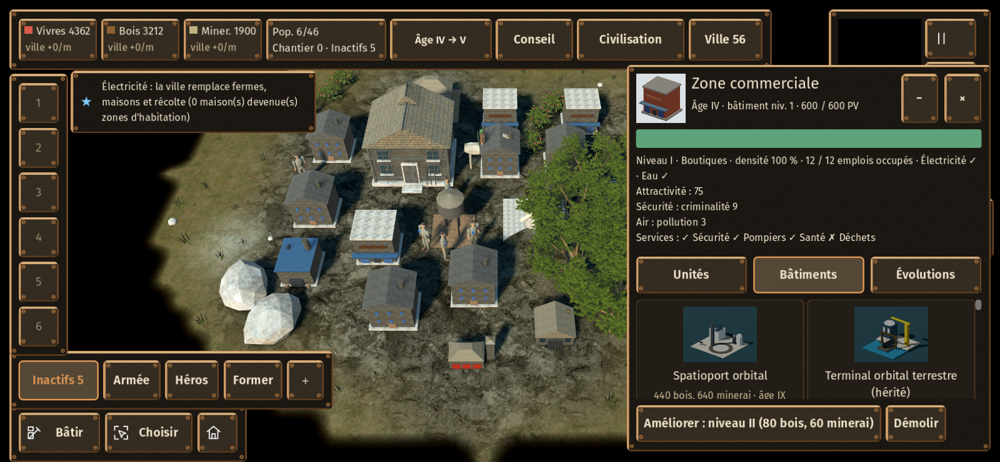
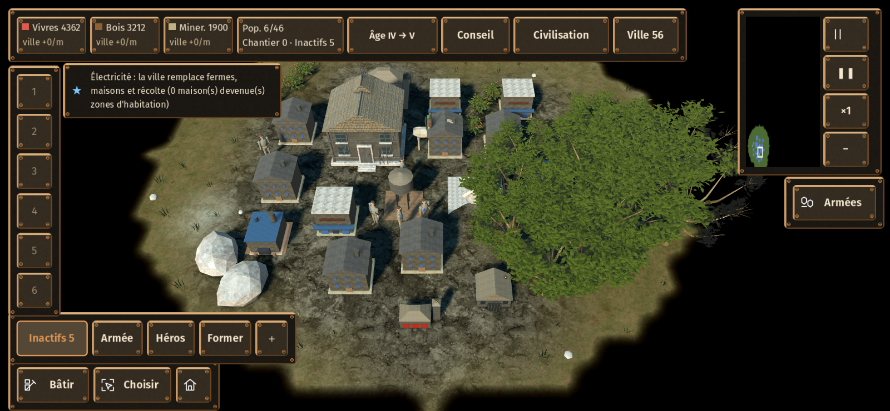
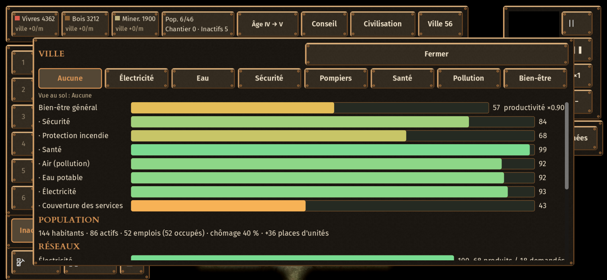
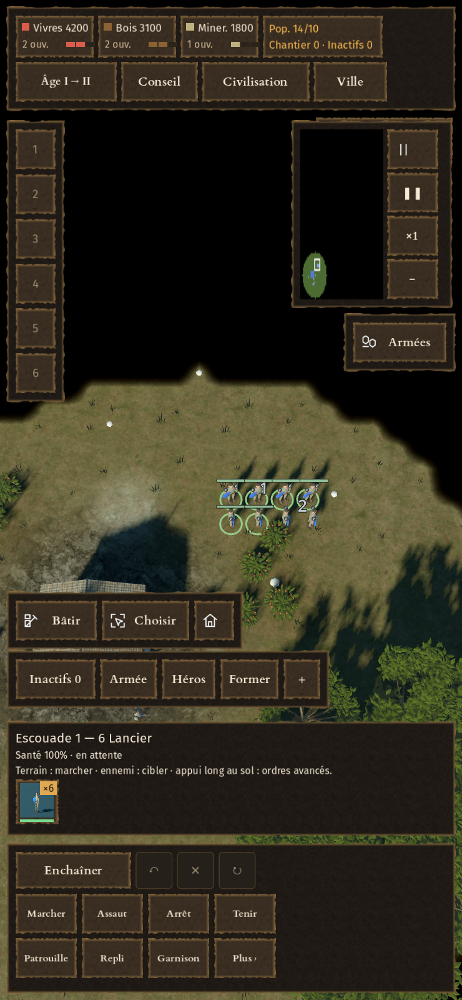
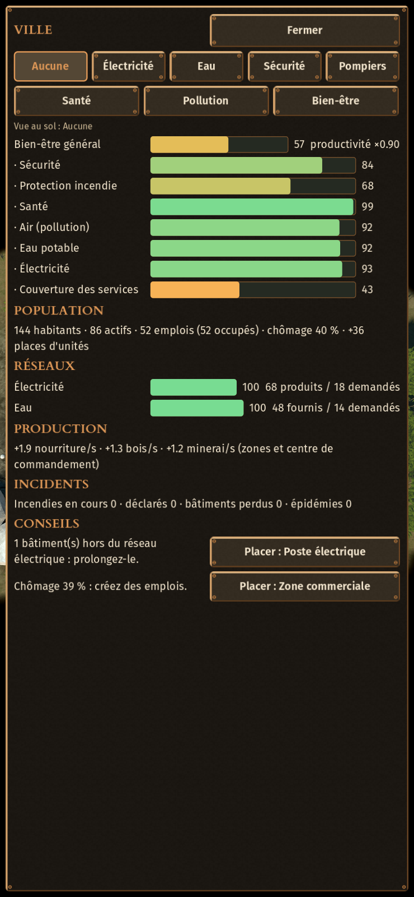

PROJET COMPLET · 0.18.0 CANDIDATE · ANDROID NOT_RUN
À l’âge de l’électricité, l’empire devient une ville. Et le jeu se tient dans les deux sens.
Captures réelles du jeu dans Godot 4.7.2 (OpenGL logiciel sur Linux). Paysage : 1600×740 ; portrait : 740×1600 (format du Galaxy S25 Ultra à l’échelle 1). La ville montrée est calculée par la vraie simulation, après la recherche Électricité.
La ville en paysage
Zones, réseaux et services · fiche d’une zone
Vue au sol « bien-être »
Panneau Ville
Bien-être et ses facteurs, réseaux, production, incidents, conseils
Le jeu en portrait
Mêmes boutons, mêmes gestes : barre du haut sur deux rangées, commandes en bas sous le pouce, panneaux en pleine largeur, vue du terrain plus plongeante.
Armée sélectionnée
Panneau Ville
Aucun APK n’accompagne cette version. Essais sur téléphone : NOT_RUN. Aucun contenu d’un jeu existant n’a été repris.